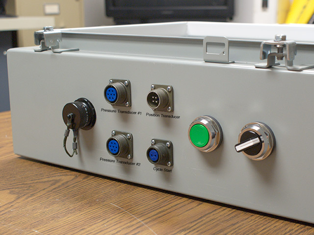
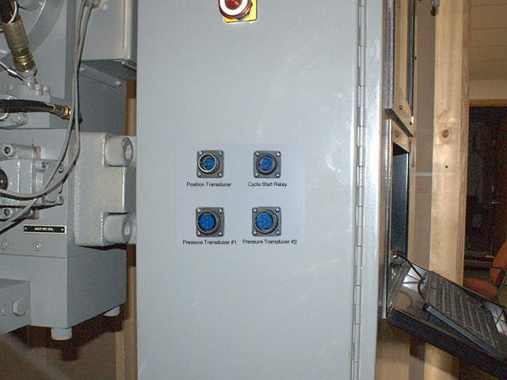

Connecting Your Die Cast Machine to the FasTrak2™ Portable
Introduction
The following describes how to connect the position transducer, pressure transducers and cycle start signals to your FasTrak2™ Portable.
The plugs for connecting these inputs to the FasTrak2™ Portable are located on the side of the box as shown in the following photo.

FasTrak2™ Portable Input Plugs
|
You can connect these to the die cast machine in either of two ways.
- Cables can be run from the FasTrak2 Portable directly to the sensors on the die cast machine.
- The cables from the die cast machine can be run to plugs mounted on the main panel of the die cast machine, as shown in the following photo. When the FasTrak2™ Portable is to be connected to the die cast machine it's cables can be connected directly to these plugs on the main panel.

Plugs for the cycle start and position and pressure transducers
mounted on the main panel of the die cast machine
|
Table of Contents
- Connecting the Visi-Trak® Position Transducer
- Connecting the Pressure Transducer
- Connecting the Cycle Start Input